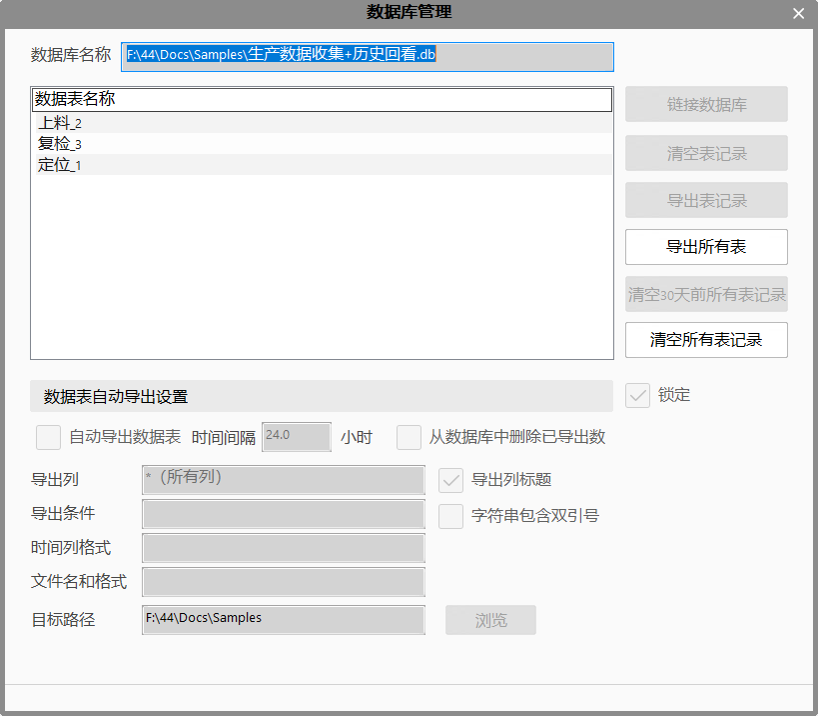
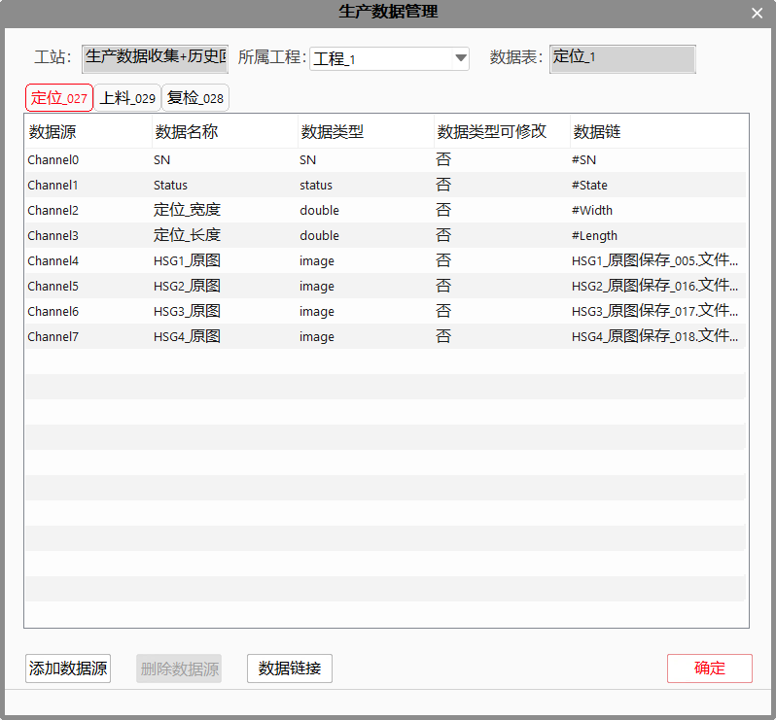

生产数据收集工具主要的用于收集生产数据，并将收集的数据保存在数据库中。收集到数据库的数据一方面可以提供给历史回看界面进行历史回看，另一方面可以提供给生产统计进行数据统计分析。它一共可以收集13种的基本数据类型，主要可以收集的数据类型有：double、int、bool、string、int64、char、float、long、short、wstring、unsigned char、unsigned long和 unsigned short类型。
为了满足历史回看功能的需要，另添加了SN、status与image三种自定义数据类型，其基础数据类型分别为string、bool和string，其中SN表示当前产品的唯一标识码，status表示当前生产状态，image表示保存图像的完整路径以实现图像的历史回看。
| 分类 | 参数名称 | 参数描述 |
|---|---|---|
| 属性窗口 | 无 | 无 |
| 图像窗口 | 无 | 无 |
| 数据链 | 输入数据 | 生产数据管理界面中设置的数据源，最多可以存在64路数据源，每一路相当于数据表里的一列。除SN和Status固定数据源之外，其余每路数据源可以在生产数据管理界面进行重命名和修改数据类型（添加时），并能进行数据链接操作 |
| SN | 固定数据源，链接产品SN号。 | |
| Status | 固定数据源，链接生产状态。 | |
| 高级界面 | 无 | 无 |
| 分类 | 参数名称 | 参数描述 |
|---|---|---|
| 监视窗口 | 表名称 | 与之相连的数据库中数据表的名称。 |
| 执行结果 | 工具执行结果。 | |
| 执行时间 | 工具执行时间。 | |
| 图像窗口 | 无 | 无 |
| 数据链 | 表名称 | 与之相连的数据库中数据表的名称。 |
无
此工具是需要和数据库一起使用的工具。为了实现生产数据收集的目的，要先连接数据库，如下图1所示，数据库管理的UI。
生产数据收集工具的数据源需要通过“生产数据管理”界面来进行配置，如图2所示，可在该界面中进行数据源的添加删除，对数据源进行重命名和类型修改，也可在该界面进行数据链接；
数据源支持的个数最大是64个。一个生产数据收集工具对应于数据库里面的一个数据表，生产数据收集工具的数据源就相当于单个数据表中的单个列，数据源名称就相当于列名，数据源的个数也就决定了表中列的个数。
为了与历史回看功能相配合，该工具强制在数据表中添加SN和status列，若不需要此信息，则不必对此数据源进行数据链接；该工具默认在数据表添加JobName列，表示当前生产的作业名，该列数据源不必手动链接，将自动从工程获取并写入数据表。
当连接上数据库时，每次添加一个数据收集工具，就会在数据库里面生成一个表，表名是唯一的。当前表名为 “当前工具名_唯一标识号”的形式，其中唯一标识号为系统自动生成以避免重名，当前工具名对于工具重命名一样有效。
若需要在历史回看功能中支持对图像的回看显示，则该工具添加的图像数据源一定要选择image类型，且链接的数据为该图像的保存的完整路径（图像保存工具或屏幕截图工具的“文件路径与文件名”输出）


参见“\Samples\生产数据收集+历史回看.gvp”。